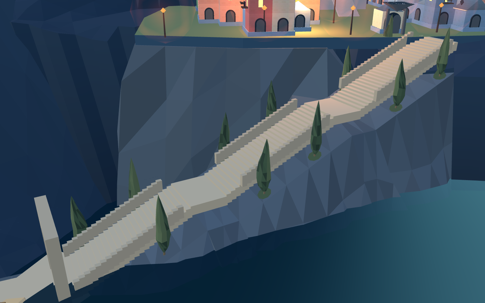
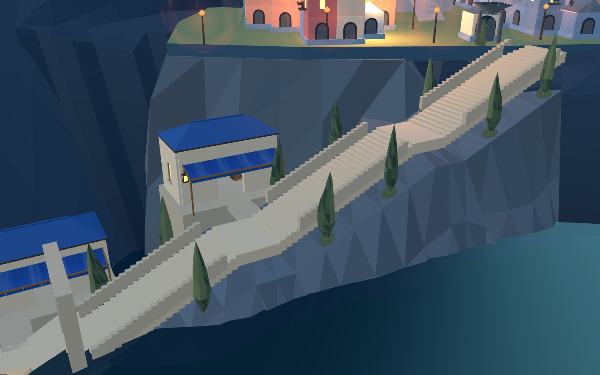
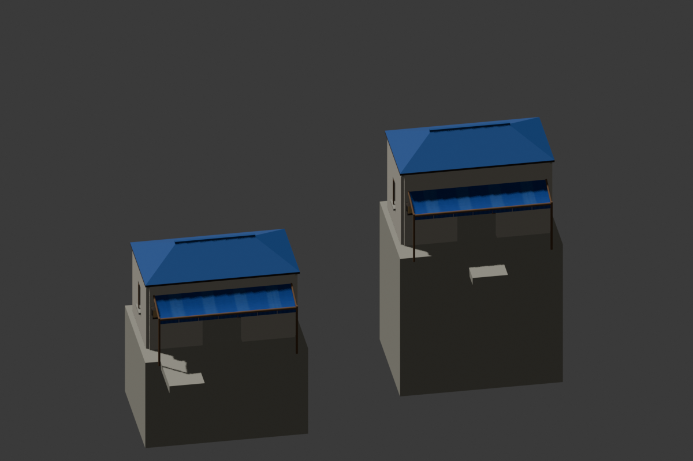
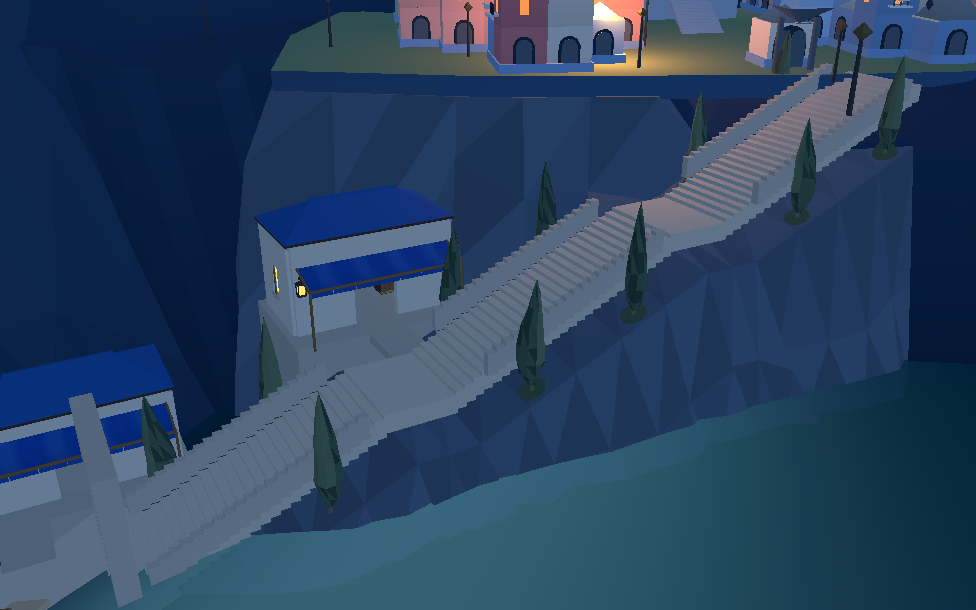
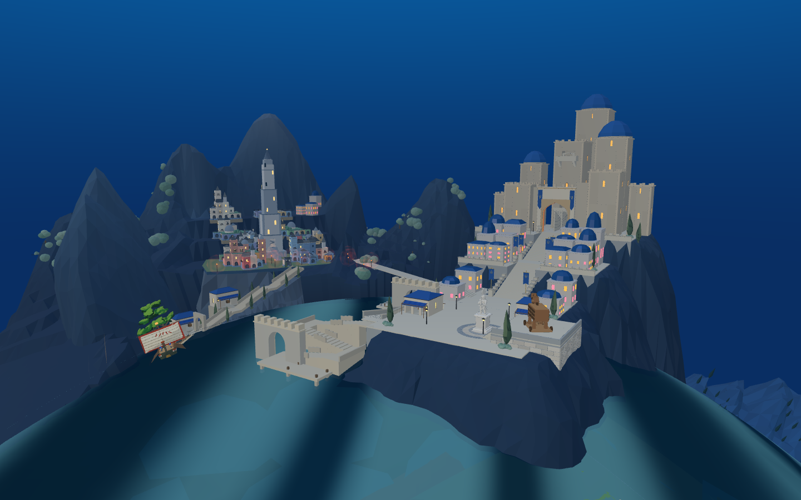
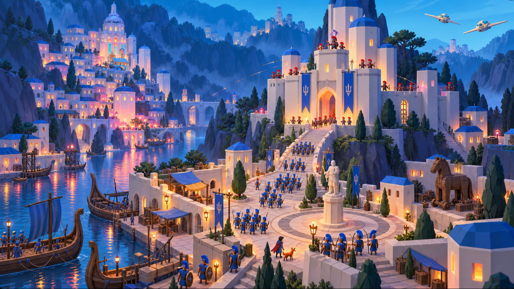

当前已合入默认 8931 入口：查看合入结果
旧城滨水：两层建筑与侧向入口
复用已有港口白石、蓝顶、布棚与拱口。两处建筑沿平台高差排布；WFC 负责前脸三个模块槽位，Blender 保留原材质、UV 和法线后回接。
进入 8931 原游戏候选 · 工程记录
Web 与 Godot 已同步：两条侧路实兵分别走完40段和30段；原上城90段、上下船及昼夜窗光通过。整体圣城仍未完成，默认入口尚未切换到候选。
同机位修改前后

之前：平台旁缺少建筑层次。
当前：岸门旁与中段平台旁分别设置低层港口建筑。Blender 与 Godot

Blender 中保存的完整构件与台基。
同一工程中的夜景。全景仍需继续对照

当前真实游戏。
认可目标：滨水建筑、植被、主堡比例与整体完成度仍有差距。